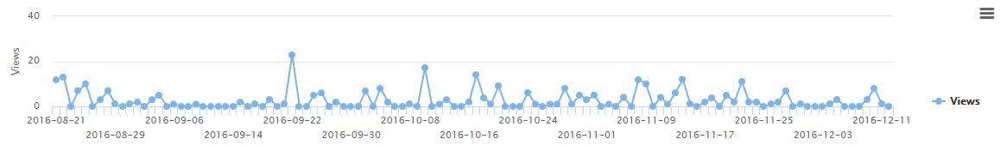

Course Guides
Overview of All Course Guides
Individual Guides
The statistics showed that the library website is being used and is particularly useful for users to access content that we direct to multiple resources from the library website home page. The analytics also showed that users access the library website from desktop computers more than 90% of the time, that users often find the library website from Search Engines, and that the home page is by far the most popular page of the website - and is used to get to informational content about the library as the 2nd most common use.
The library gem of the week has been a fairly popular offering from the library. Overall, there were 385 clicks from the Gem of the Week email to content on offer. This amounts to an average of 42 clicks per gem. The most popular Gem of the Week content were resources that had academic and non-academic offerings.
The statistics show that course guides were best used if they were introduced to students early in the semester and focused on content related directly to an assignment(s). Information in the guide not directly relating to this purpose was viewed at a much lower rate. Content clicks varied depending on the needs of the students and based on the assignment. Usage of the guides (as shown by clicks on resources) rose sharply around assignment due dates.
The Freshman Guide was accessed, at a total of 315 views during the course of the Fall Semester. The guide was accessed throughout the semester, not weighed heavily at one particular time period. The guide's most popular page by far was the 'home page,' which was viewed by a 4 to 1 rate compared to any other page in the guide.
